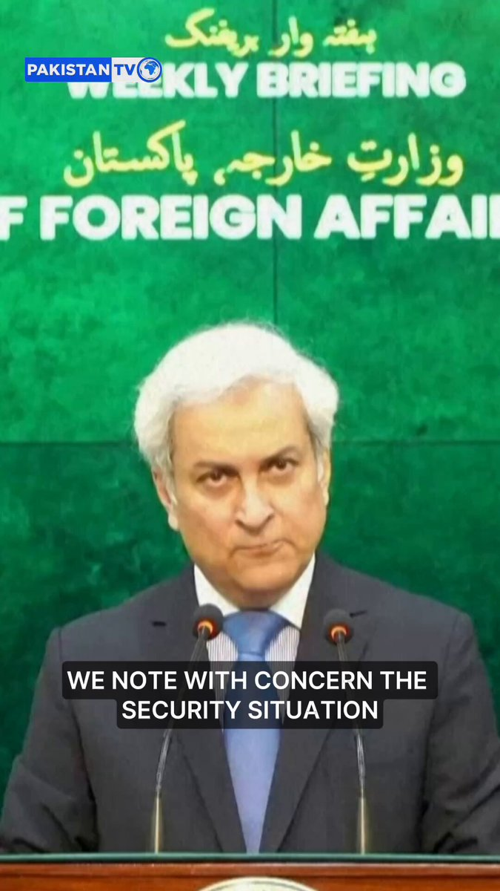
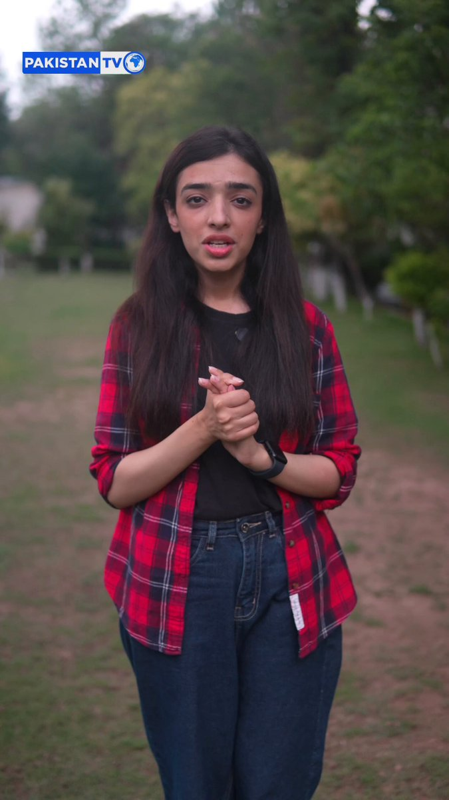
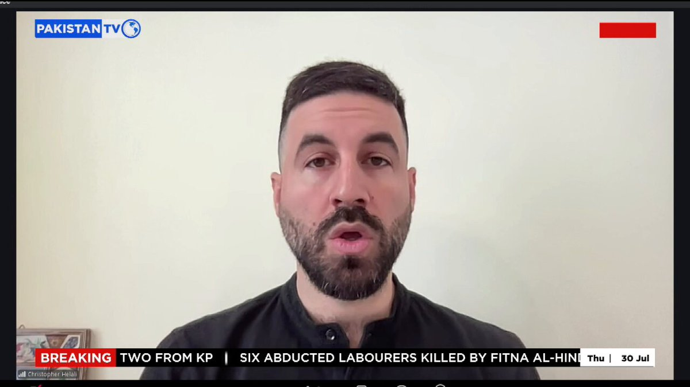

@MIshaqDar50
📝 原文:
🇨🇳 译文:

🕒 2026-07-30T15:52:40+00:00
| 来源 | 旧窗口内数量 | 本次新增 | 本次淘汰 | 当前窗口内共有 |
|---|---|---|---|---|
| 推文 + Dawn 新闻 | 0 | 53 | 1 | 52 |
| ARY News | 0 | 0 | 0 | 0 |
注：淘汰数 = 旧窗口内数量 + 本次新增 - 当前窗口内共有










暂无文章。